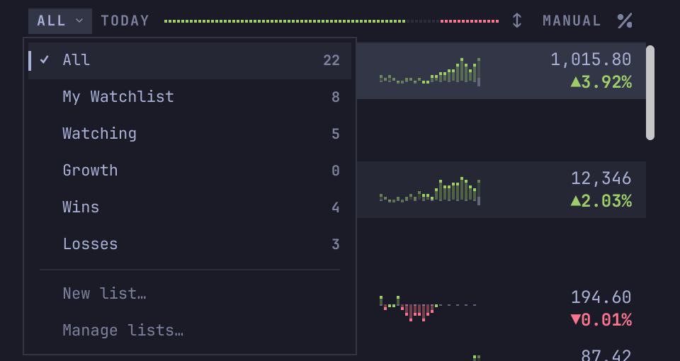
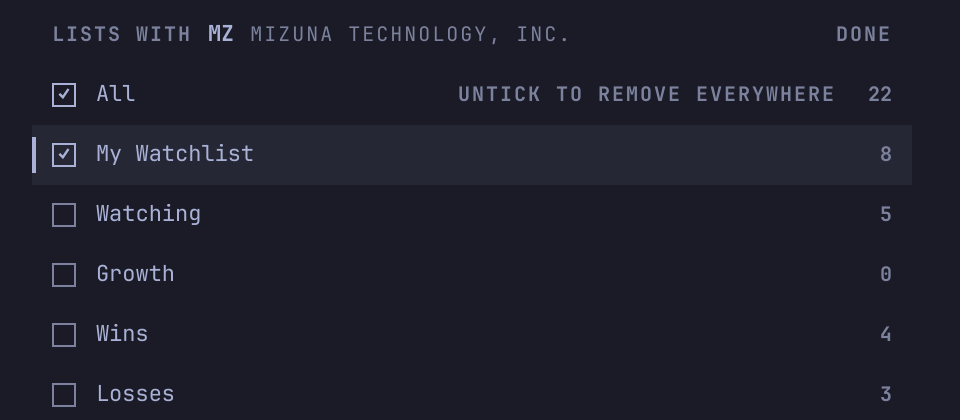
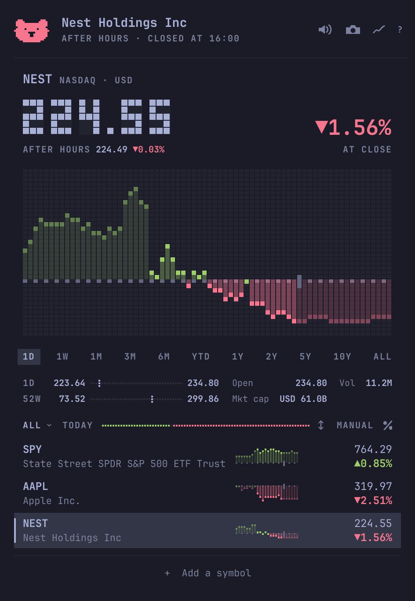

A plugin for Omarchy 4
Stonks
Your stocks in the bar. A chart a click away.
Stonks is a free stock watchlist for the Omarchy bar. A small pill shows how one stock is doing today. Click it for the chart and your lists. It follows stocks, ETFs, indexes, and crypto, and needs no account or API key.
omarchy plugin add https://github.com/gmchande/omarchy-stonks.git --enableYou need Omarchy 4. It asks you to confirm, then where to put the pill in the bar. Stonks is also on the Omarchy plugin marketplace.
STAGE1ONE DAY
A Tuesday, from pre-market to after hours.
Scroll to run the clock through a made-up day, or skip it. The chart chimes as it draws, and a bell rings at the open and the close.
STAGE2IN YOUR BAR
A pill in your bar.
The pill shows how the stock you last looked at is doing today. Scroll over it to step through your list. Click it for the popup, right-click it for the window, and drag it to move it along the bar. Middle-click it to switch what it shows: a sparkline, an arrow, the price as text, or an icon.
Here, scroll over the pill to step through the stocks, and click it to switch what it shows.
STAGE3SOUND TEST
A chart you can hear.
Run the pointer along the chart and it chimes, higher where the line is higher. Each press of ← or → chimes too, and a replay sweeps the chimes along the line. Smooth and retro each have their own voice.
- Adding a symbol or removing a row makes a short sound, and undoing plays the removal backwards. Taking a screenshot makes a shutter sound.
- A soft bell rings when the market opens or closes for the stock you last looked at. It doesn't ring while every screen is off or an app is recording from your microphone.
- Refreshes and prices make no sound.
- Stonks starts silent. To turn sounds on, click the speaker at the top right, or press m. Your system volume sets how loud they are.
STAGE4SCREENSHOTS
A picture of the chart, ready to post.
Click the camera at the top right, or press Ctrl+C, for a picture of the chart you're looking at. It's sized so X shows it whole.
- It shows the price and its move, the exchange, and the time with its zone.
- If you've gone back through the day, it shows that moment. Your list is never in it.
- Stonks saves it with Omarchy's own screenshots, copies it to the clipboard, and shows a notification. Click the notification to open the picture in your screenshot editor.

STAGE5ON THE LABEL
What's in the cartridge.
- Stocks, ETFs, indexes, and crypto, from New York to London and Tokyo, with charts from one day to all time.
- Pre-market, after-hours, and overnight prices, and when the market opens or closes.
- Prices as Yahoo and Robinhood send them, in each listing's own currency and its exchange's own time.
- The 52-week low and high, the market cap, and the P/E.
- A tiled window too, with the popup's chart and rows at the window's width.
- An old price says "As of" and its time. A "!" on the pill means a refresh failed or is late.
- Light on your computer: Stonks fetches nothing while every screen is off, and fetches each stock only as often as its market moves.
NOT IN THE CARTRIDGE
Stonks doesn't track your holdings or send price alerts. It never converts prices.
STAGE6YOUR LISTS
Lists of your own.
All holds every symbol you follow. Your own lists, such as a portfolio or a sector, each hold some of them. Click the list's name to switch lists, start a new one, or manage them.
- To choose which lists a row is in, Ctrl-click it, or select it and press Ctrl+Enter.
- To remove a row, click the × beside its symbol, or select it and press Delete. Removing it from All removes it from every list. Right-click a row to choose which lists it leaves.
- Removed one by mistake? For 5 seconds, a button such as "Undo NVDA" shows beside "+ Add a symbol". Ctrl+Z also undoes it, until you change a list again.
- Rows show the day's change as a percent or an amount, or the percent change since the open. To switch, click the %, ±, or bell at the end of the list's header.
- Sort by symbol, name, or change, or keep your own order.


STAGE7SELECT YOUR THEME
Smooth or retro, in your theme.
Stonks opens in retro, with block digits for the price and pixel columns for the chart, the way Omarchy draws its logo. Smooth uses plain digits and a line chart. Both use your theme's colors, on light themes too. If its green and red are missing, too alike, or too faint, Stonks uses its own.
LOOK
Press s anywhere on this page to switch, as in Stonks.
DARK THEMES
LIGHT THEMES

STAGE8MOVE LIST
Play it with the keys.
In Stonks, press ? to see this list.
- ↑↓
- Move the selection
- ⏎
- Show the selected row's chart
- Ctrl+⏎
- Choose the selected row's lists
- ←→
- Scrub the chart one step
- []
- Change the range
- p
- Replay the chart
- Ctrl+C
- Take a screenshot
- a
- Add a symbol
- Del⌫
- Remove the selected row
- Ctrl+Z
- Undo a removal
- ⇧↑⇧↓
- Move the selected row, in your own order
- o
- Change the order
- Shift+O
- Reverse the order
- w
- Open the list menu
- c
- Show the day's change as a percent or an amount, or since the open
- s
- Switch between smooth and retro
- m
- Turn sounds on or off
- r
- Refresh
- Shift+U
- Update Stonks when a new version is out; once it's done, press again to restart the shell
- Tab⇧Tab
- Next or previous panel on the bar (popup)
- ?
- Show every key
- Esc
- Close
Press a key to light up its move. s and m work on this page too. The README has the same table.
STAGE9HOUSE RULES
What Stonks runs, fetches, and writes.
- PRICES
- Quotes, charts, and search come from Yahoo's unofficial endpoints, and overnight prices from Robinhood. Either may change or stop without notice.
- DELAYS
- Yahoo sends some exchanges' prices late. When we measured, London's came 15 minutes late, and New York's and crypto within a minute. A price more than two minutes old while its market trades says "As of" and its time.
- RUNS
- Only commands Omarchy ships:
curlfor every request, PipeWire'spw-playfor each sound,wl-copyto put a screenshot on the clipboard, and a few more the README lists. It runsomarchy plugin update grvc.stonksandomarchy restart shellonly when you ask. - SITES
query1.finance.yahoo.comfor prices, charts, the market cap, and the P/E;query2.finance.yahoo.comfor search;api.robinhood.comfor overnight prices; andraw.githubusercontent.comfor the newest version number, as the shell starts and once a day. Nothing else.- FILES
- Your lists and settings, in
~/.config/omarchy/grvc.stonks.json. The last prices and Stonks' own sounds, in~/.cache/grvc.stonksby default. Each screenshot you take, in the folder Omarchy's own screenshots use. - UPDATES
- Never by itself. When a new version is out, the footer offers it.
- ADVICE
- None. Stonks isn't investment advice, and isn't affiliated with Yahoo or Robinhood.
STAGE10QUESTIONS
Asked and answered.
What is Stonks?
Stonks is a free stock watchlist for the Omarchy 4 bar. A small pill shows how one stock is doing today. Click it for the chart and your lists.
How do I install a stock ticker on Omarchy?
Install Stonks with one command: omarchy plugin add https://github.com/gmchande/omarchy-stonks.git --enable. You need Omarchy 4. It asks you to confirm, then where to put the pill in the bar.
Does Stonks need an account or an API key?
No. Stonks works without either.
Where do Stonks' prices come from?
From Yahoo Finance's unofficial endpoints, and overnight prices from Robinhood. Yahoo sends some exchanges' prices late, so Stonks marks an old price with "As of" and its time.
Does Stonks show pre-market, after-hours, and overnight prices?
Yes. A smaller line under the price shows the pre-market, after-hours, or overnight price. Overnight prices cover the US stocks and ETFs that trade overnight on Robinhood. Until the next session opens, the day's chart shows the last session, then the night and the pre-market.
Which markets does Stonks follow?
Stocks, ETFs, indexes, and crypto, from New York to London and Tokyo. Each price stays in its listing's own currency: Stonks never converts it.
Does Stonks make sounds?
Only if you turn them on: click the speaker at the top right, or press m. Then adding or removing a row makes a short sound. The chart chimes as you run the pointer along it. A soft bell rings when the market opens or closes for the stock you last looked at.
Does Stonks track my portfolio or send price alerts?
No. Stonks shows prices and charts for the stocks you follow. It doesn't track your holdings or send price alerts.
What does Stonks cost?
Nothing. Stonks is free and open source, under the MIT license.
Free play: install Stonks
No account. No API key. Free, under the MIT license.
omarchy plugin add https://github.com/gmchande/omarchy-stonks.git --enable- Omarchy warns that plugins run without a sandbox, and asks you to confirm.
- It asks where in the bar to put the pill. The center is the default.
- Click the pill.
To read the code first, leave out --enable, say no when Omarchy offers to enable it, and run omarchy plugin enable grvc.stonks when you're ready.